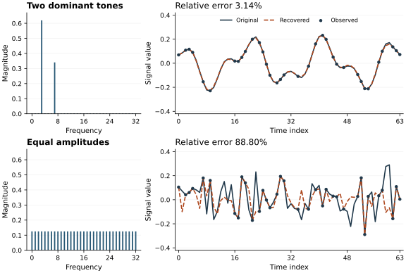

The Fourier ratio and signal recovery
Suppose a sensor records 35 of 64 measurements. What can we say about the 29 values it missed? The answer depends in part on how the signal distributes its energy across frequencies.
Two signals with the same energy
Both signals in this example contain all 64 Fourier frequencies. In the first signal, most of the energy lies in two cosine waves. In the second, every Fourier coefficient has the same magnitude. We use the same phases for both signals and scale each to have unit energy.
The Fourier ratio of a nonzero signal is the sum of the magnitudes of its Fourier coefficients divided by the square root of the sum of their squares. In symbols, FR(f) = ‖f̂‖₁ / ‖f̂‖₂. If exactly k coefficients have equal nonzero magnitude and the rest vanish, the ratio is √k. Thus a flat spectrum across 64 frequencies has ratio 8. Concentrating the energy in a few frequencies lowers the ratio even when all the other coefficients remain nonzero.
Filling in the missing measurements
At each time we toss a fair coin to decide whether to keep the measurement. We use the same 35 retained times for both signals. Among the signals that agree with the measurements, we choose one with the smallest sum of Fourier coefficient magnitudes. The algorithm receives only the observed values and their time indices.


| Signal | Fourier ratio | Relative error |
|---|---|---|
| Two dominant tones | 2.106 | 3.14% |
| Equal amplitudes | 8.000 | 88.80% |
The error is the Euclidean length of the reconstruction error divided by the length of the original signal, measured over all 64 times. These are the errors for one random sample. The notebook fixes the seed at 2026 so that the calculation can be repeated.
What the theorem says
For a finite signal of length N with Fourier ratio at most r, choose each time independently with probability p. For 0 < ε < 1, a sufficient expected sample size for stable recovery is
pN ≥ C(r/ε)2 log2(r/ε) log N.
Here C is an absolute constant. Under the theorem’s data-fidelity condition, minimizing the Fourier ℓ¹ norm gives relative error at most 11.47ε with probability at least 1 − exp(−cpN) for an absolute constant c > 0. The experiment above fits noiseless measurements exactly. Its two observed errors illustrate how the method behaves at a fixed sample size.
The full statement appears in Theorem 3 of The Fourier Ratio: A Unifying Measure of Complexity for Recovery, Localization, and Learning, with Will Burstein and Hari Sarang Nathan. Journal version.
For more on the mathematics of incomplete measurements, see my four lectures on signal recovery, restriction theory, and applications at the Hausdorff Institute.